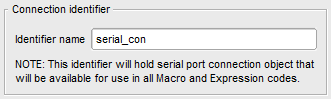

HIL SCADA¶
Serial Connection Widget¶
Serial Connection Widget is used to establish serial communication link within Custom UI.
Its main purpose is to open a serial connection with the specified parameters on the selected COM port. Opened connection is available through a special identifier (variable) that holds the opened serial connection object. The connection object is accessible from all the macro and expression scripts for both writing and reading.
Note
The connection object itself is the object of the class Serial(), one of the classes from the PySerial Python library. For more information about available functions visit PySerial web site (https://pythonhosted.org/pyserial/pyserial_api.html).
Since Custom UI is a multithreaded application and all monitoring widgets use threads to periodically read data, writing to and reading from the serial port needs to be synchronized between threads to prevent overlapping of write/read operations.
For that purpose a simple locking mechanism is used. The idea is that communication sequence which requires exclusive access to the serial port can lock the port in order to prevent other threads from accessing it.
Below can be found examples that demonstrate Serial Connection Widget typical use cases.
How to examples¶
First inside the Serial Connection Widget property dialog set the desired Connection identifier name.

This identifier with the name which you specified is available as a variable with the same name in all Macro and Expression scripts. The identifier holds the connection object of the class Serial() and all functions of this class are available for use.
You can lock the port and on that way make the code thread-safe in two simple ways:
You can use dedicated connection object
lock()andunlock()functions. By calling serial connection objectlock()function you will explicitly lock that serial port. After locking the serial port writing to and reading from it will be thread-safe. After you finished working with the serial port you need to unlock it by callingunlock()function.
Note
After the port is locked, code that follows needs to be as short as possible (it is preferable to contain only serial read/write calls) to prevent slowdown of other threads that use the same connection object.
Warning
It is very important that the port that was previously locked is unlocked again by calling unlock() function. If some exception occurs, unlock() function must be called. Because of that Python try/finally statement should be used.
Example:
# lock the port by using its serial connection object
serial_con.lock()
# from this line using locked serial port is thread-safe
# NOTE: After we lock the port, code should be as short as possible
# try to read from/write to serial port
try:
# check if connection is opened
if serial_con.isOpen():
# write something to com port
serial_con.write("RST")
# read one line
data = serial_con.readline()
finally:
# we need to release the lock or the port will stayed locked for other threads also
serial_con.unlock()
Use connection object’s
serial_lockattribute and Pythonwithstatement. In this case you don’t need to worry about locking and unlocking the serial port or handling exceptions explicitly,withstatement automatically takes care about that.
Example:
# all serial read/write operations with the serial port inside the context of `with` statement is thread-safe
with serial_con.serial_lock:
# at the beginning of the context 'with' statement will automatically lock the serial port
# NOTE 1: 'with' statement will automatically unlock the serial port in case of exception.
# NOTE 2: Code inside context should be as short as possible
# check if connection is opened
if serial_con.isOpen():
# write something to com port
serial_con.write("RST")
# read one line
data = serial_con.readline()
# at the end of the context 'with' statement will unlock the serial port